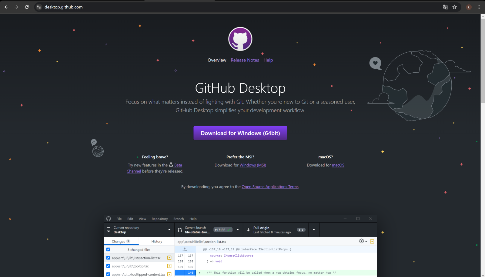
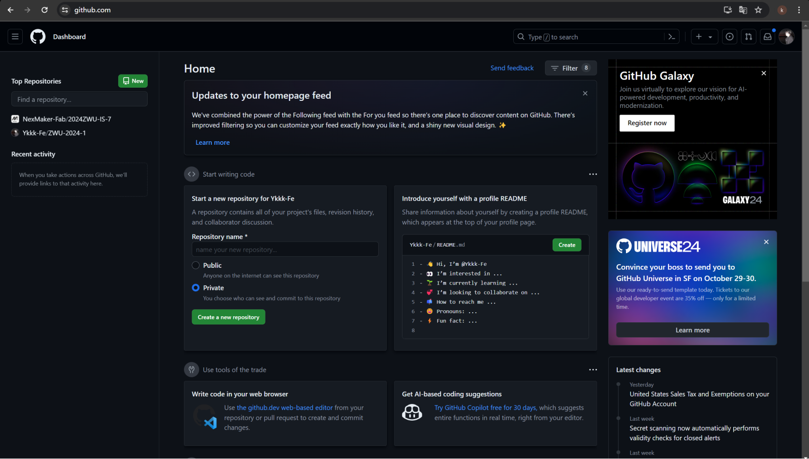
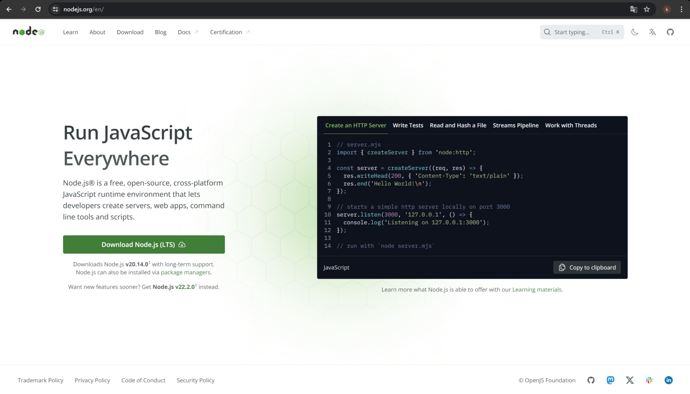
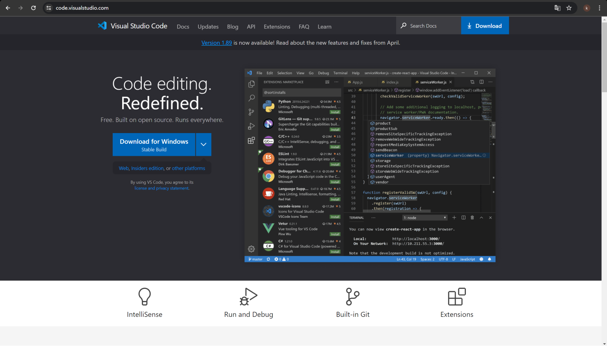

Prepare tool for website.
-Github；Our website will be placed here.
-Github desktop；Here we can upload local files to Github, set up and share
our website and code.
-Nodejs； Since the tool includes NPM, we used it to manage packages,
interact with the command line, and integrate with VScode
- VScode; We enhanced our web development workflow with this versatile and
customizable tool.



